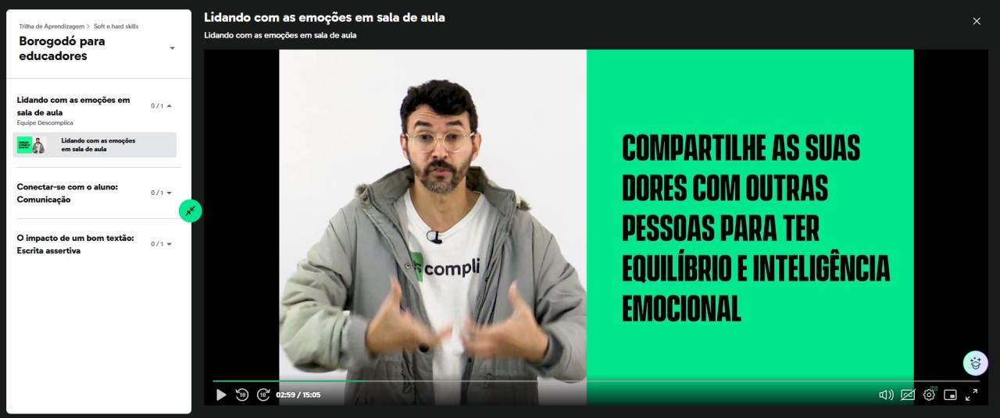
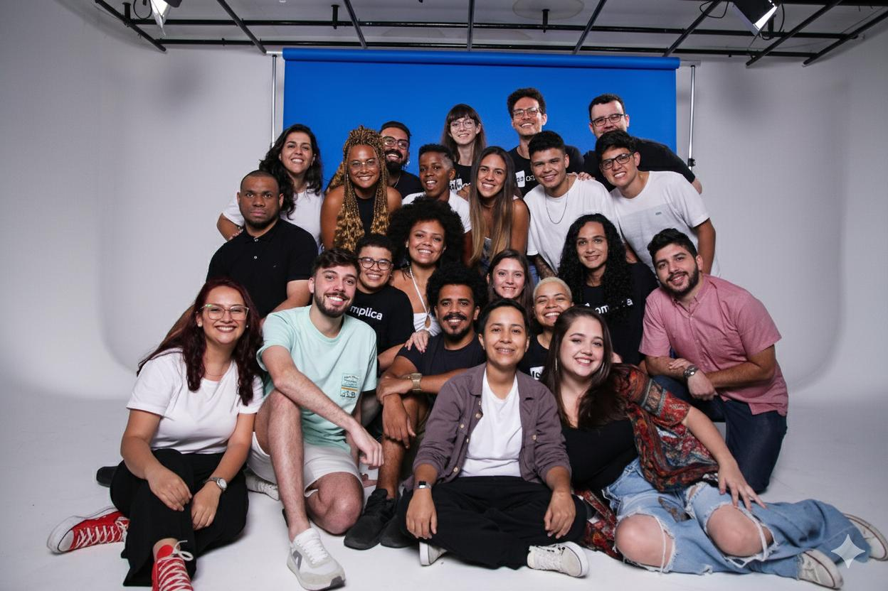
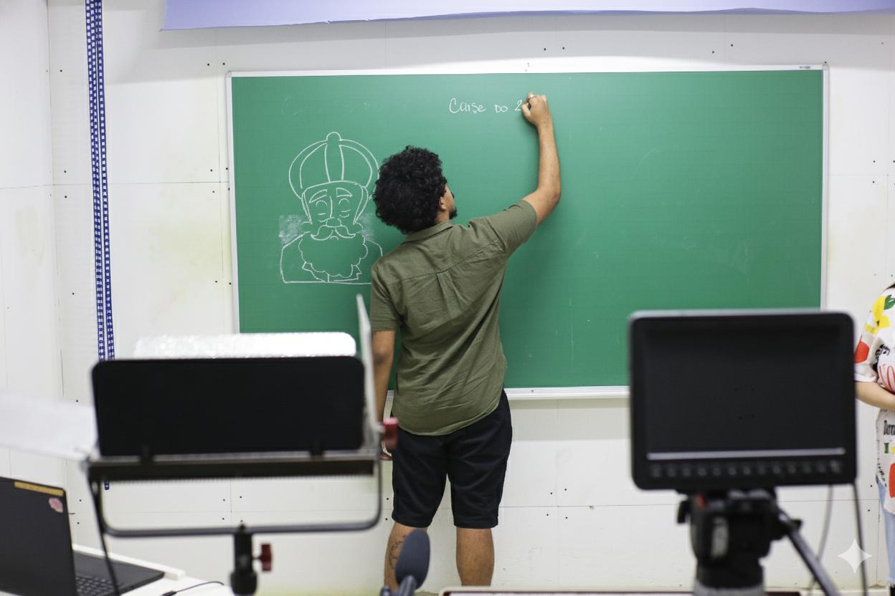

O problema
O time de monitores era a linha de frente do atendimento pedagógico aos alunos, mas o desenvolvimento deles acontecia de forma pontual e reativa: treinava quando surgia problema. Não existia um caminho estruturado de formação continuada, e isso aparecia na inconsistência da qualidade do atendimento.
O desafio: criar uma cultura de aprendizado contínuo pro time, sem tirar as pessoas da operação e sem depender de treinamentos presenciais pontuais.
A solução
Desenhei a Trilha de Aprendizagem combinando sala de aula invertida com uma LMS própria: o monitor estuda o conteúdo gravado no seu ritmo (módulos de soft e hard skills, de inteligência emocional a escrita assertiva) e depois participa de lives de aprofundamento, onde o conteúdo vira prática e discussão.
- LMS exclusiva do projeto: módulos organizados por competência, com vídeos e materiais complementares disponíveis a qualquer momento;
- Sala de aula invertida: teoria assíncrona, encontro ao vivo focado em troca e aplicação;
- Aulas assistidas: depois da implementação de cada conteúdo, acompanhamento em campo pra avaliar a aplicação real e ajustar a trilha.


À esquerda, a LMS exclusiva do projeto, com módulos voltados ao aprendizado contínuo dos monitores. À direita, eu na abertura da trilha, explicando o projeto pro time.
Meu papel
Além de idealizar e gerir o projeto, eu liderava o time de monitores no dia a dia. Isso me deu uma vantagem rara em projetos de formação: eu via de perto o que funcionava e o que não funcionava, e a trilha evoluía com base nessa observação real, não em suposição.
Cada conteúdo implementado passava por aula assistida e avaliada, fechando o ciclo entre formação e prática.


À esquerda, o time de monitores que eu liderava. À direita, uma aula assistida e avaliada depois da implementação de conteúdo da trilha.